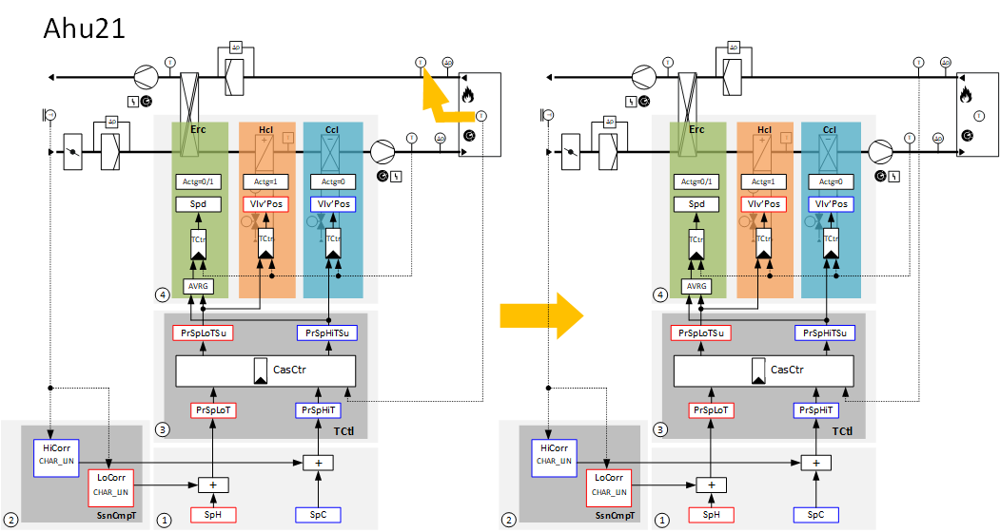
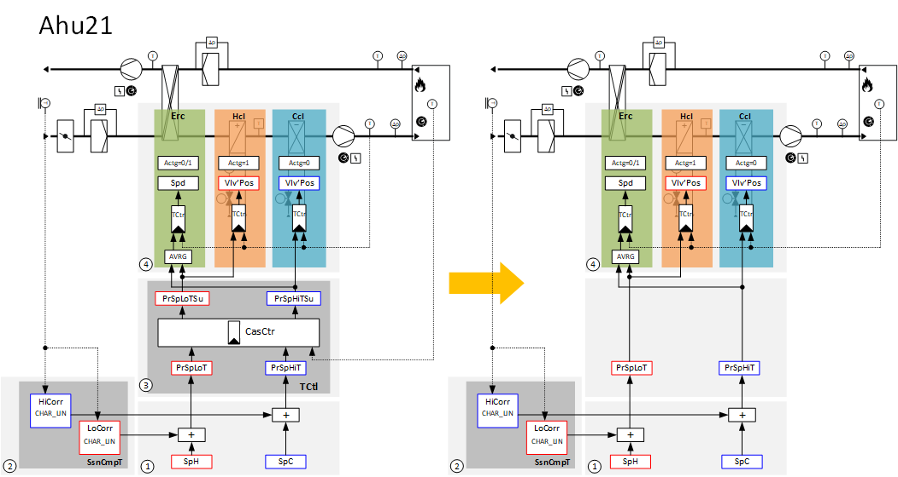
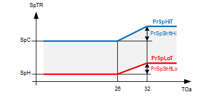
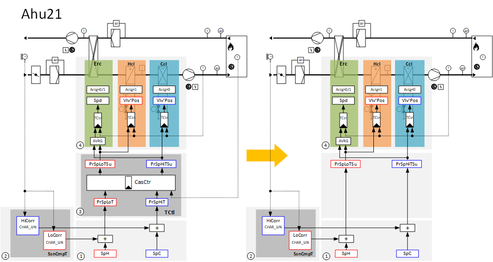

通过抽气、送风或室温对扁平植物进行通风控制
植物实例“[Ahu21] Air handling unit, temperature cascade control, pressure control" 用作房间/supply 空气温度级联控制。
该工厂示例只需进行一些修改即可适应以下应用：
- Extract air/supply air temperature cascade control
- Pure supply air temperature control
- Pure room temperature control
如果送风用于多个房间且没有适合房间/supply空气温度级联控制的参考房间，则可以使用公共排风温度来控制房间温度的平均值。
使用排风温度代替室温传感器，从工厂示例 Ahu21 中创建 extract/supply 空气温度级联控制。

① 基本设定点温度控制
② 季节温度补偿
③ 温度串级控制
④ 送风温度控制
当前室温设定点 [PrSpHiT] 和 [PrSpLoT] 的计算方法与设备示例 Ahu21 相同。使用排风温度实际值代替室温实际值来计算多泵控制器 Cas_Ctrl 中的当前送风设定值 [PrSpHiTSu] 和 [PrSpLoTSu]。设备组件Erc、Hcl 和Ccl 根据送风温度设定点与送风温度实际值之间的偏差进行控制。
在没有送风温度传感器或工厂仅运行单个房间的情况下，可能需要直接控制室温。然而，由于缺乏检查送风温度的能力，可能会导致送风温度意外高或低。
使用设备示例 Ahu21 进行室温控制需要进行以下修改：

① 基本设定温度控制
② 季节温度补偿
④ 送风温度控制
通过季节温度补偿修正的高低温设定值[PrSpHiT]和[PrSpLoT]被用作当前室温设定值。

SpTR = 室温设定值
PrSpShftHi = 季节性温度补偿函数的输出
PrSpShftLo = 季节性温度补偿函数的输出
TOa = 室外温度
设备组件Erc、Hcl 和Ccl 根据室温设定点与室温实际值之间的偏差进行控制。
如果房间中的加热和冷却需求不是通过通风而是以其他形式提供，则可能需要直接送风控制。通风可以支持低/高室外温度下的局部加热/冷却。
要使用设备示例 Ahu21 进行送风控制，需要进行以下修改：

① 基本设定温度控制
② 季节温度补偿
④ 送风温度控制
[PrSpLoTSu] 和 [PrSpHiTSu]，经季节性温度补偿加热和冷却设定值 [SpH] 和 [SpC] 修正后，直接用作送风设定值。设备组件Erc、Hcl 和Ccl 根据送风温度设定点与送风温度实际值之间的偏差进行控制。
温度控制的基本设定点 [SpH] 和 [SpC] 定义很窄，例如1 [K] 差异，用于在加热和冷却之间创建中性区。
如果在室外温度较低或较高时需要额外支持加热和/or 冷却，则必须相应修改季节性温度补偿的设置。这发生在嵌套图表 SsnCmpT（季节温度补偿）内的功能块 CHAR_LIN 上。
Example
温度控制的基本设定点 [SpH] 和 [SpC] 定义很窄，例如20 [°C] 和 21 [°C]。
根据室外温度修改送风温度，如下：
- Between -10 [°C] and -15 [°C], the supply air temperature is increased continuously up to a maximum increase of 2 [K]. This provides support to heating at low outside temperatures.
- Between 30 [°C] and 34 [°C], the supply air temperature is lowered continuously down to a maximum setback of 2 [K]. This provides support to cooling at high outside temperatures.

SpTR = 室温设定值
SpTSu = 送风温度设定值
PrSpShftHi = 季节性温度补偿函数的输出
PrSpShftLo = 季节性温度补偿函数的输出
TOa = 室外温度